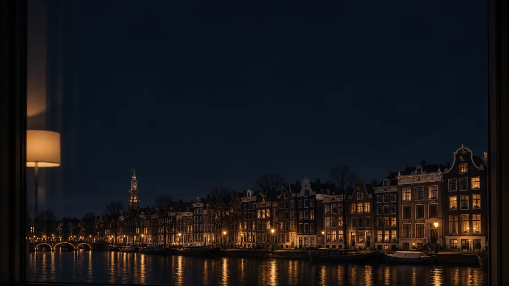
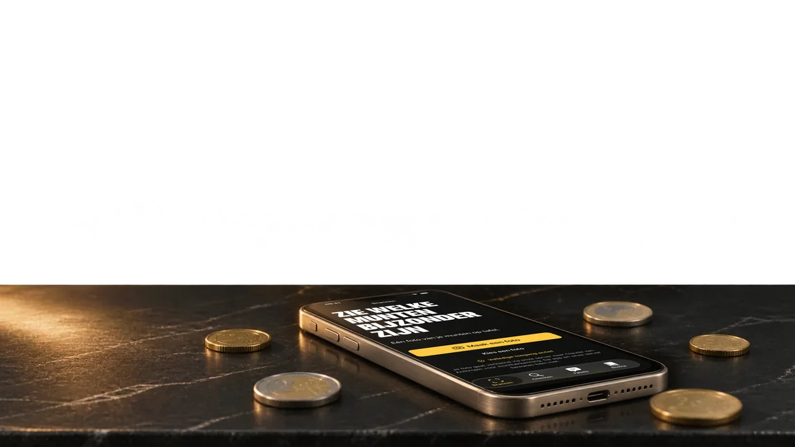
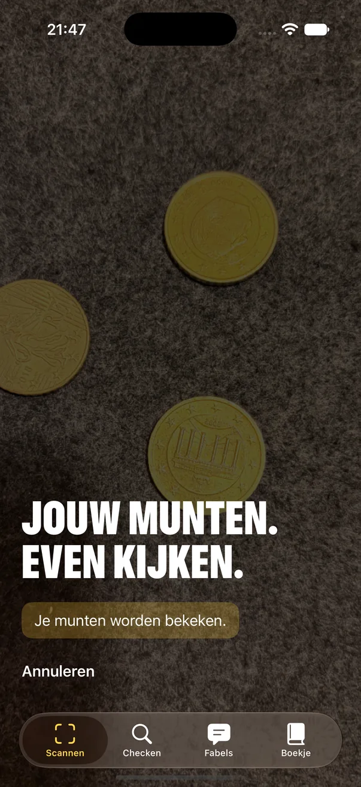
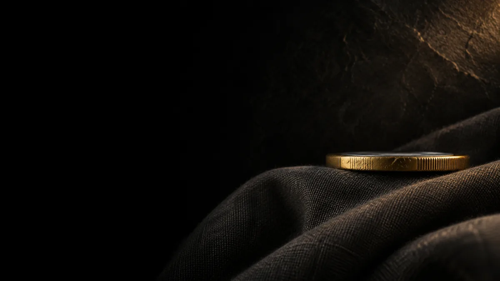

VOOR DE VONDST IN JE ZAK
JE KLEINGELD.
EEN VERHAAL.


Van je jaszak naar je eigen verzameling.
Begin met een foto.
 Nu in de App Store. Amsterdam, na sluitingstijd.
Nu in de App Store. Amsterdam, na sluitingstijd.De scan
LEG HET
OP TAFEL.
Je maakt een foto van je munten. De landkant naar boven.
De scan
DRIE MUNTEN.
EVEN KIJKEN.
De app markeert de munten op de foto. Jij kijkt mee.
De scan
WELKE IS
DE JOUWE?
Vergelijk de details met je eigen munt. Land, jaar en uitvoering doen ertoe.
Apart catalogusvoorbeeld
EN DAN.
DE ONTHULLING.
Een voorbeeld uit de catalogus. Finland, 2 euro 2004, uitbreiding EU.
Het boekje
IN JE BOEKJE.
Bewaar de munt met het oordeel en de indicatie. Je verzameling begint hier.

Uitbreiding EU
ongebruikt
Indicatie, geen verkoopprijs.
Finland · 2 euro · 2004
Demonstratie met een echte scan
De herkomst
ELKE ZAK
HEEFT EEN VERHAAL.
Wat er al die tijd tussen je kleingeld zat.



DE FABELCHECK
“EVEN POETSEN.
DAN IS HIJ
MEER WAARD.”
× Onwaar
Schoonmaken of poetsen verlaagt de verzamelwaarde. Niet doen.
Het boekje
VAN LOSSE MUNT
NAAR EIGEN VONDST.
Een foto. Een oordeel. Een plek in je boekje.
Privacy
JE FOTO WORDT
GEEN ARCHIEF.
De app en onze server bewaren de verstuurde foto niet. Voor verwerking gaat je foto via onze server naar Anthropic. Daar geldt het bewaarbeleid van Anthropic. Een bestaande foto blijft in je fotobibliotheek.
Lees over je gegevens ↗
Eén keer. Van jou.
Download gratis en zoek zoveel je wilt. Volledige toegang koop je één keer, zonder abonnement. De prijs zie je in de App Store.
Bekijk de scan ↗JE VOLGENDE VONDST BEGINT IN JE ZAK.
EUROREVEAL
Een plek voor je euromunten.